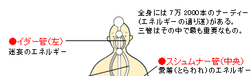
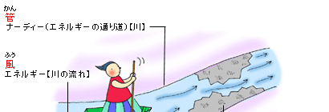
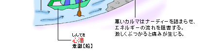

 
◆七万二千本のナーディーを、エネルギーが駆け巡る
わたしたちの体には、七万二千本のナーディーと呼ばれる管が通っており、その中をエネルギーが駆け巡っている。ナーディーは、霊的エネルギーの通り道に当たる。
その中で、特に重要な三つの管がある。それが、スシュムナー管、イダー管、ピンガラー管だ。スシュムナー管は身体の真ん中を通っている。また、イダー管は尾てい骨の左側から、ピンガラー管は右側から出発し、それぞれ各チァクラの位置で交差しながらアージュニァー・チァクラの左右に至っている。そのためイダー管のことを左の気道、ピンガラー管のことを右の気道、スシュムナー管のことを中央の気道と呼ぶこともある。
左のイダー管には迷妄のエネルギーが、右のピンガラー管には邪悪心のエネルギーが、中央のスシュムナー管には愛著のエネルギーが通る。
◆ナーディーの詰まりを浄化して、エネルギーを上昇させる
ところでナーディーは、その人の心の働きに応じて詰まりが生じる。これは、水を通すホースが水垢によって詰まってしまう状態に似ている。
例えば、ある人が性欲に関して邪悪心を持っていたら、スヴァディスターナ・チァクラのところでピンガラー管に詰まりが生じる。よって、エネルギーがそれ以上上がらなくなってしまう。
だから、わたしたちが修行を進める上でしなければならないことは、ナーディーの詰まりを浄化し、エネルギーを速やかに上昇させることだ。
浄化のプロセスとしては、まずイダー管、ピンガラー管の両管を浄化する。そして、エネルギーを中央の気道に集中させる。この時点で、スシュムナー管には愛著というストレスのエネルギーが生じる。このストレスのエネルギーがクンダリニーとなって上昇するのだ。
ちなみに、スシュムナー管が通っていないとクンダリニーは上昇せず、愛著が生起してしまう。しかし、クンダリニーとして上昇したストレスのエネルギーは頭頂へと至り、解脱への門サハスラーラ・チァクラを開くことになるのだ。